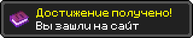
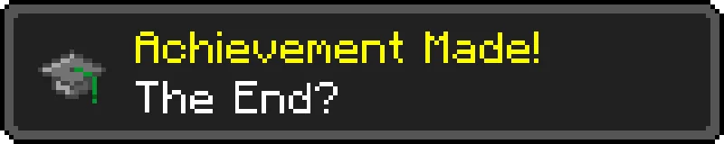

Minecraft — это песочница, где можно строить, исследовать и выживать.
Вы можете добывать блоки, создавать инструменты и сражаться с мобами.
Это одна из самых популярных игр в мире.
Зимняя тайга — холодный биом, покрытый снегом и еловыми деревьями. Здесь можно встретить волков и лис. Земля покрыта снегом и льдом, а пейзаж напоминает настоящую северную тайгу. Иногда в этом биоме можно найти деревни и исследовать красивые заснеженные леса.
Дубовый лес — один из самых распространённых биомов в Minecraft. Здесь растёт много дубовых деревьев и травы, а также обитают животные, такие как коровы, овцы и свиньи. Этот биом отлично подходит для начала выживания, потому что здесь легко добывать древесину и строить дом.
Сакуровый лес — красивый биом с розовыми деревьями сакуры. С деревьев падают лепестки, создавая спокойную атмосферу. Этот биом отлично подходит для строительства красивых домов и декоративных построек. Многие игроки любят его за уникальный внешний вид.
Пустыня — жаркий и сухой биом, состоящий в основном из песка. Здесь можно найти кактусы, сухие кусты и иногда пустынные храмы. В храмах часто находятся сундуки с ценными предметами. Несмотря на суровые условия, этот биом очень интересен для исследования.
